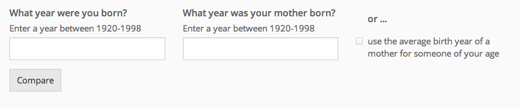

Unfortunately your browser cannot display this graphic. You might need to upgrade to a modern browser - Find out more information here https://www.gov.uk/help/browsers
* A woman is assumed to have completed her childbearing by the last day she is aged 45, i.e. by her 46th birthday. Completed fertility includes fertility rates up to and including age 45.
The methods used to create these estimates by cohort / birth year of women require the use of data collected at birth registration on the number of previous children they have had. At present this information is not collected for men. Without this information it is not possible to produce an estimate of the proportion of men who have not fathered a child.
Approximately 6% of births are also registered without information on the father being provided and these births also affect our ability to generate comparable statistics for men.
Male Period fertlity rates are published annually on the same day as this release.
This data is shown in more detail in the accompanying statistical bulletin & reference tables
fertility@ons.gsi.gov.uk
See more from ONS Digital